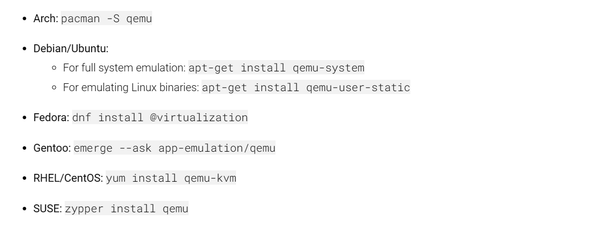
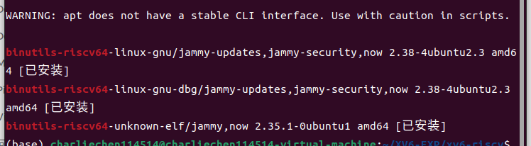
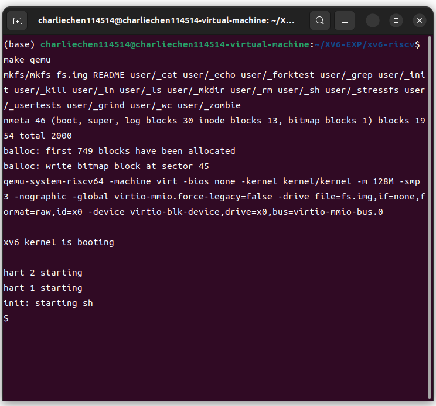
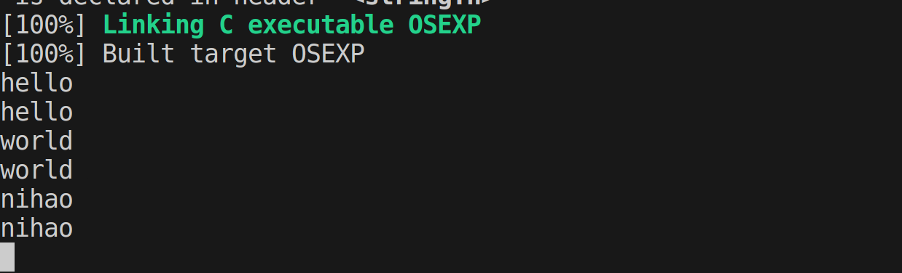
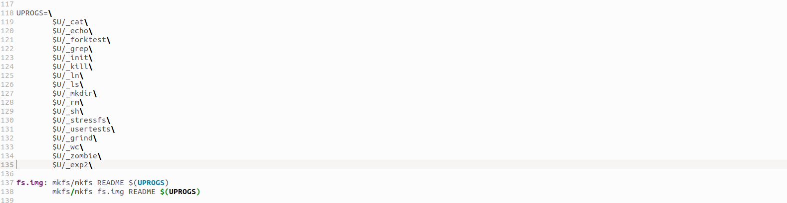
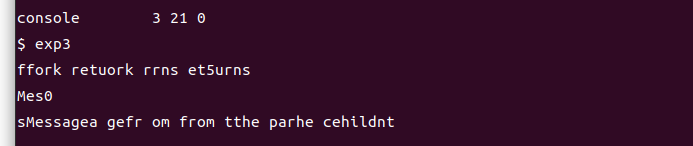
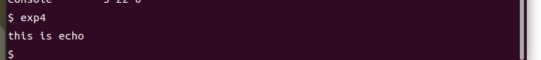
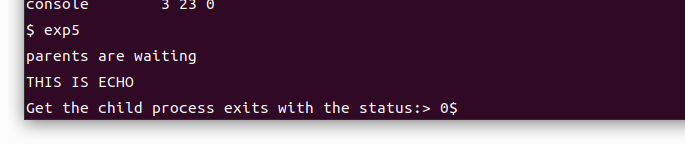

MIT_6S081_online_course I
MIT 6.S081
概述
操作系统有很多不同的种类，其中一个就是对硬件的抽象。要知道硬件给予的接口一般都很原始，我们操作系统就是提供一个更加高级的接口为应用程序服务：比如说方便且具有可移植性的通过进程或者是文件系统等抽象（虚拟/抽象）
另一个重要的功能就是为许多应用程序提供复用硬件的能力（如你可以在一个操作系统中同时运行一个文本编辑器，录音机或者是多个数据库服务器等）值得注意的是，它们的运行之间互相并不干扰，这就是操作系统给上层提供的一种叫做“虚拟”的抽象（多路复用）我们把强调互不干扰这个方面功能，我们叫做隔离性；
另一方面，一些不相同的用户进程中文件的交流可能需要用到一些共享数据，这个就叫做共享能力。
进一步去想的我们的数据不是随时随地都可以被随意的共享，是我们用户需要共享数据时才会去共享，不想共享共享数据时就不去共享，我们称这实现这样功能的系统叫做安全权限或者是系统权限系统，即访问控制系统。接着，操作系统应该能为大多数应用软件至少提供硬件资源分配的能力，甚至还会去试着去提高程序的性能
我们尝试将计算机抽象成一个具有金字塔结构的一个系统，在系统的最底层则是硬件层，它可能包含了CPU，RAM，硬盘或者是网络收发器等硬件，而在最顶层可能用运行的是用户能够直观看到或者是潜在的一些应用软件，比如说文本编辑器VI，unix操作系统常用的编译器CC，或者是图形化的终端命令行shell等。这些用户进程下的这些应用程序所在的空间，它的运行空间，我们通常称为用户空间。那么，中间的这一层——介于硬件和用户软件的这一层——则是我们这本课程关心的重点，
这个层里面有一个内核，它是计算机资源的守护者。内核总是在开机时第一个运行，它帮助管理计算机的数据管理用户进程，并且有很多数据结构来帮助访问文件等数据结构。本门课程就是关注诸如如何管理用户进程，如何使用文件系统管理文件，如何用户层与内核层之间接口交互等问题。
内核当中有许多东西，我们首先说的就是内核：内核作为操作系统的核心，管理着众多底层的东西：我们首先说内核自身，他作为一个进程为内核服务进行管理，他管理着各个程序的内存分配。我们知道不同的进程要求吧不同的内存数量。内核的一项任务就是分配合理的内存。
内核还会作用于文件系统：我们知道文件系统分为多个逻辑部分。现在我们则是从文件管理的角度去理解他。换而言之，我们就是把文件视作数据和占据数据的内存。赋予一个名字并且管理他。通常的讲，我们的文件具有访问控制，决定谁，能够怎么用这样的文件。内核内部的访问控制权限将会决定之。
对于分时操作系统，每个进程可能由不同的用户运行，每个进程都有不同的访问权限等。一个成熟的操作系统还必须提供进程间的通信功能，换而言之，进程之间可以交换数据。诸如TCP/IP通信时的信息传递。一般的操作系统通过库函数来实现操作状态内核对底层硬件的一种调用。熟知Linux系统调用与库函数的人应该知道：
int open(const char *pathname, int flags);
int open(const char *pathname, int flags, mode_t mode); 可以用来打开一个文件——他是一个系统调用。
亦或者
write(int fd, const void* buffer, const size_t size); 用来向目标文件写入数据。
亦或者
pid_t fork(); 开启一个Linux线程——他完全拷贝父线程的资源并且将程序起点定在开启线程的下一行。他们像是函数，但实际上又有所不同——他们跳进内核去了！
为什么书写这些东西是有趣而又有挑战的呢？答案是——因为我们准备去写其他人习以为常的环境！我们希望让我们的操作系统更有效率，更加可移植，更加的对于上层用户来讲是简单的。这需要我们具有一定的设计。
Q && A 我们的系统调用和普通函数有什么区别嘛（包括那些不涉及系统调用的库函数）
简单的讲——一般的函数不具备调用敏感硬件的能力，换而言之，没有任何关于内核的权限。想要使用底层的硬件就必须要向使用系统调用，意味着我们需要通过系统调用来操作敏感硬件。而在内核态，也就是通过修改PSW寄存器的FLAG描述位而进入内核态的程序才有权限。比如说可以直接任意的访问磁盘等
另外，我们需要“即灵活”又“有一定约束”的控制程序，不让他们之间相互干扰。
Q && A 我们需要成为操作系统专家才能写程序嘛？
OF COURSE NOT，我们可以通过大量的书写，维护，调试程序慢慢建立对操作系统的认识，我们的日常书写可能不会跟操作系统打太多的交道。但是仍然值得一学来看看电脑究竟发生了什么
下面，我们来尝试着运行一下MIT提供的教学代码：也就是xv6。
这里，我使用的平台是Windows11 + Ubuntu22.04 + QEMU + 20231015左右的xv6源码。
首先
git clone http://github.com/mit-pdos/xv6-riscv.git(By the way, 原来MIT给出的代理使用的是git代理，这里鄙人手动换了一下，切成这里的http代理加速，具体需求按照自己的环境决定)
其次，下好Qemu：

这里是截至到2023年10月15号，鄙人在Download QEMU - QEMU找到的instruction。我自己是为了节约时间，选择了：
sudo apt-get install qemu-system 安装结束后，当你尝试：
cd /yourpath/xv6-riscv
make qemu 意外发生：那就是一般而言，我们的电脑没有支持RISC-V指令集的GNU编译工具链，所以——
apt search binutils |grep binutils-riscv64 一下找到3个：（笔者这里已经安装结束，故给出【已安装】提示）

sudo apt install binutils-riscv64-linux-gnu
sudo apt install binutils-riscv64-linux-gnu-dbg
sudo apt install binutils-riscv64-unknown-elf 以及在这后：还会存在一个报错，那就是没有RISC-V指令集的GCC编译器：
sudo apt install gcc-10-riscv64-linux-gnu
cd /usr/bin # 懒癌是这样的
sudo ln -s riscv64-linux-gnu-gcc-10 riscv64-unknown-elf-gcc # 现在，我们就软链接了riscv64-unknown-elf-gcc，不出意外的话，不会报错了
make qemu
结束。
热身
我们来看看这些文件，他们可以在我们的Linux编程底下同样的可以使用之：举个例子。
TASK: 利用xv6下的kernel, user文件夹下的函数，构建一个copy.c，当我们保证在64个字节大小的最大输入范围下，实现echo功能：（提示：在UNIX操作系统中，往往会选择0作为程序标准输入流，1作为程序标准输出流，当然这不一定）
// copy.c: copy the stdin to the stdout
#include "../kernel/types.h"
#include "../user/user.h"
int main()
{
char buf[64];
while(1){
int n = read(0, buf, 64);
// get less or none bins, quit then
if(n <= 0)
break;
// else output to the shell
write(1, buf, n); // must be n, as a param to discribe
// how much letter should be written
}
exit(0);
} 我们手撸一个Cmake让他跑起来：
# this build files try to use the kernel written by
# MIT , kernel code is provided in https://github.com/mit-pdos/xv6-riscv
cmake_minimum_required(VERSION 3.20)
project(OSEXP VERSION 1.0)
add_executable(OSEXP copy.c)
target_include_directories(OSEXP PUBLIC ../kernel/ ../user/) 结果显然不错——就是有最大长度让人不太舒服

现在我们再看看这几行代码——
当我们引入头文件结束之后，我们程序进到程序入口Main这里，执行到：
char buf[64]; 我们在栈上开辟了64个字节大小的内存，
while(1){} 这里我们实现了除非接受到终止信号（Ctrl + C），程序将会永远运行下去， except for…埋伏笔
int n = read(0, buf, 64); 这里的read很朴实，先前的提示给过，结合POSIX标准（Portable Opreate System Interface of uniX），我们的read都统一的设定为这样的函数描述：
read(int from_where, void* what_buf, size_t bufSize); 只要提供给文件描述符（将这个分发的数字抽象成文件自身），数据块及其大小，就可以从标准输入流中读取数据了。读取的时候，可能会出现异常或者是没有输入（n <= 0）的情况，那就：
break; // Process get an error and it appears and is dealed in Software Level 否则，那就直接向标准输出，也就是我们的终端，返回我们刚刚送进去的一切。
Ｑ＆＆Ａ：如果我们发疯，我们明明只有64个bytes却让他读65个，会怎么样
答案是：UB，哈哈。可能是程序计数器的内容，或者是栈上其他的什么内容，参数。。。什么都可能是！总而言之，小心，再小心的设置边界参数，这里没人会帮助你检查的！
我们发现，对于操作系统和更底层的硬件来讲，他们丝毫不关心这些二进制流（一串有意义的01）意味着什么，如何解释是上面的事情，他们只是老实的搬运字节，设置字节等等。
TASK：尝试使用kernel,user, fcntl下的open和write函数打开文件并且进行读写。
#include "kernel/types.h"
#include "kernel/fcntl.h"
#include "user/user.h"
int main()
{
int fd = open("output.txt", O_CREATE | O_WRONLY);
write(fd, "Oh my Godness!\n", 16);
exit(0);
} 对了，这个时候就可以考虑不使用cmake了，我们可以把他放进qemu上实际跑一下。方法是：
把我们写的.c文件移至user文件夹下，修改Makefile文件的这些部分：

可以看到光标部分添加了一行
$U/_{srcname}\ 这里表示的就是把我们的用户代码添加进来的意思。现在，执行
make qemu 然后ls，发现系统内多存在了一个文件，那就是我们的exp2文件，运行之，啥现象没有！
exp2 但是再次ls，发现多出来我们的output.txt了，
$cat output.txt
>>> Oh my Godness!
$ 可以注意到：内核自己维护了一张表——他包含了每个进程中对不同文件的编号。所以，对于不同的进程，相同标号的文件有的时候可能是指向一个不一样的文件。只是恰巧文件编号相同了罢了
下面提到了shell，shell作为字符终端有着广泛的应用，在UNIX系统操作上，我们可以用之完成批处理等任务。或者是执行程序：
$ ls 我们发现程序被列出来了，它实际上是去枚举当前目录的文件，并且打印在终端上。shell还允许你重定向IO，换而言之，你可以将结果输出到其他地方
$ ls > out.txt
$ cat out.txt 发现跟终端输出完全一样
Q$$A 编译器如何处理对涉及到系统调用的代码？
答案是：事实上，我们需要调用系统调用的地方，本质上都是使用汇编写的（执行陷入指令），这里，在RISC-V下有一条汇编指令叫做ecall，他将程序的控制权转交内核。换而言之，这里实际上跳转进入的不是一个用C写的代码段，而使用特有的机器指令写的代码段。编译器只负责翻译添加将一些需要的参数传递进入需要的寄存器的指令就结束他的工作
TASK：尝试使用并发编程：fork()
#include"kernel/types.h"
#include"user/user.h"
int main()
{
int pid;
pid = fork();
printf("fork returns %d\n",pid);
if(pid == 0)
{
printf("Message from the child\n");
}
else
{
printf("Message from the parent\n");
}
exit(0);
}
结果不太雅观——毕竟混在一起了。注意到，我们的fork是这样工作的
- 在主线程中，调用fork返回给自身的线程是一个大于0的整数
- 对于子线程则就是0，我们就是在代码里实现分支的控制的
- 出现乱码的原因是——他几乎是真正并发的输出内容
下面展示的是exec的作用：
#include "kernel/types.h"
#include "user/user.h"
int main()
{
char* argv[] = {"echo", "this", "is", "echo", 0};
exec("echo", argv);
printf("exec failed!\n");
exit(0);
}
我们发现，程序被替换了！exp4在进程中被替换成了argv[0]的echo，换而言之，执行的是
echo this is echo 这个指令。exec的作用就是将将要执行的进程替换掉自身，然后执行那个替换的线程去，用新程序覆盖这个程序的上下文和内存空间
对了，最后的那个0，就是\0的意思，终止符。这是因为exec要用，要知道指令参数停在哪个位置。不然就会越界了！
所以shell是如何调用命令的呢？fork一个线程然后调用exec指令来开真正的新线程
#include "kernel/types.h"
#include "user/user.h"
int main()
{
int pid, status;
pid = fork();
if(pid == 0)
{
char* argv[] = {"echo", "THIS", "IS", "ECHO", 0};
exec("echo", argv);
printf("FAILED TO EXECUTE THE ECHO\n");
}else{
printf("parents are waiting\n");
wait(&status);
printf("Get the child process exits with the status:> %d", status);
}
exit(0);
}

这里，如果子程序执行失败，就会把错误码1返回回来，他会交给主线程wait里，上报到操作系统提示出错了。UNIX中认为凡是退出码是0的都是正常退出的！
by the way，close这个函数指的是释放系统资源，这里指得就是文件描述符分配表，那些不close的文件会占着表资源不放，从而使后面的调用open的文件描述符返回的是下一个index。